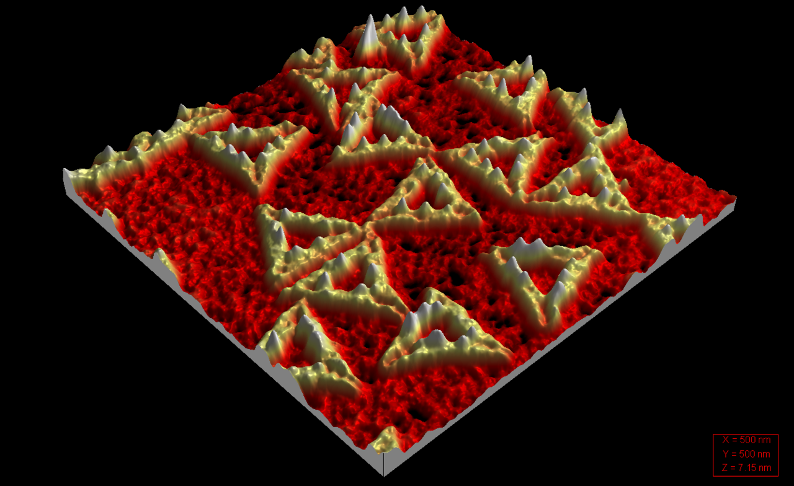

DNA 가닥을 종이접기처럼 접어 — 나노 구조를 만듭니다.
1994년 Leonard Adleman은 시험관 안의 DNA 분자만으로 — 7개 도시를 한 번씩 들르는 최단 경로 문제(외판원·TSP)를 풀었습니다. 컴퓨터 없이, 생명의 분자가 직접 계산했습니다.
실리콘은 빠르지만 뜨겁고, DNA는 느리지만 차갑고 작습니다. 미래의 연산은 — 시험관 안에서 일어날지 모릅니다.